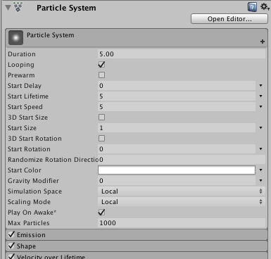

class in UnityEngine
/
Inherits from:Component
/
Implemented in:UnityEngine.ParticleSystemModule
Script interface for ParticleSystem. Unity's powerful and versatile particle system implementation.
General parameters
The Particle System's general parameters are kept inside a special Main module. These parameters are visible in the Inspector above all the other modules:

ParticleSystem.emission.enabled = true; // Doesn't compilevar emission = ParticleSystem.emission; // Stores the module in a local variableemission.enabled = true; // Applies the new value directly to the Particle Systemvar emission = ParticleSystem.emission;emission.rate = new ParticleSystem.MinMaxCurve(5.0f);var emission = ParticleSystem.emission;emission.rate = 5.0f;| Property | Description |
|---|---|
| collision | Script interface for the CollisionModule of a Particle System. |
| colorBySpeed | Script interface for the ColorByLifetimeModule of a Particle System. |
| colorOverLifetime | Script interface for the ColorOverLifetimeModule of a Particle System. |
| customData | Script interface for the CustomDataModule of a Particle System. |
| emission | Script interface for the EmissionModule of a Particle System. |
| externalForces | Script interface for the ExternalForcesModule of a Particle System. |
| forceOverLifetime | Script interface for the ForceOverLifetimeModule of a Particle System. |
| inheritVelocity | Script interface for the InheritVelocityModule of a Particle System. |
| isEmitting | Determines whether the Particle System is emitting particles. A Particle System may stop emitting when its emission module has finished, it has been paused or if the system has been stopped using Stop with the StopEmitting flag. Resume emitting by calling Play. |
| isPaused | Determines whether the Particle System is paused. |
| isPlaying | Determines whether the Particle System is playing. |
| isStopped | Determines whether the Particle System is in the stopped state. |
| lifetimeByEmitterSpeed | Script interface for the Particle System Lifetime By Emitter Speed module. |
| lights | Script interface for the LightsModule of a Particle System. |
| limitVelocityOverLifetime | Script interface for the LimitVelocityOverLifetimeModule of a Particle System. . |
| main | Access the main Particle System settings. |
| noise | Script interface for the NoiseModule of a Particle System. |
| particleCount | The current number of particles (Read Only). The number doesn't include particles of child Particle Systems |
| proceduralSimulationSupported | Does this system support Procedural Simulation? |
| randomSeed | Override the random seed used for the Particle System emission. |
| rotationBySpeed | Script interface for the RotationBySpeedModule of a Particle System. |
| rotationOverLifetime | Script interface for the RotationOverLifetimeModule of a Particle System. |
| shape | Script interface for the ShapeModule of a Particle System. |
| sizeBySpeed | Script interface for the SizeBySpeedModule of a Particle System. |
| sizeOverLifetime | Script interface for the SizeOverLifetimeModule of a Particle System. |
| subEmitters | Script interface for the SubEmittersModule of a Particle System. |
| textureSheetAnimation | Script interface for the TextureSheetAnimationModule of a Particle System. |
| time | Playback position in seconds. |
| trails | Script interface for the TrailsModule of a Particle System. |
| trigger | Script interface for the TriggerModule of a Particle System. |
| useAutoRandomSeed | Controls whether the Particle System uses an automatically-generated random number to seed the random number generator. |
| velocityOverLifetime | Script interface for the VelocityOverLifetimeModule of a Particle System. |
| Method | Description |
|---|---|
| AllocateAxisOfRotationAttribute | Ensures that the axisOfRotations particle attribute array is allocated. |
| AllocateCustomDataAttribute | Ensures that the customData1 and customData2 particle attribute arrays are allocated. |
| AllocateMeshIndexAttribute | Ensures that the meshIndices particle attribute array is allocated. |
| Clear | Remove all particles in the Particle System. |
| Emit | Emit count particles immediately. |
| GetCustomParticleData | Get a stream of custom per-particle data. |
| GetParticles | Gets the particles of this Particle System. |
| GetPlaybackState | Returns all the data that relates to the current internal state of the Particle System. |
| GetTrails | Returns all the data relating to the current internal state of the Particle System Trails. |
| IsAlive | Does the Particle System contain any live particles, or will it produce more? |
| Pause | Pauses the system so no new particles are emitted and the existing particles are not updated. |
| Play | Starts the Particle System. |
| SetCustomParticleData | Set a stream of custom per-particle data. |
| SetParticles | Sets the particles of this Particle System. |
| SetPlaybackState | Use this method with the results of an earlier call to ParticleSystem.GetPlaybackState, in order to restore the Particle System to the state stored in the playbackState object. |
| SetTrails | Use this method with the results of an earlier call to ParticleSystem.GetTrails, in order to restore the Particle System to the state stored in the Trails object. |
| Simulate | Fast-forwards the Particle System by simulating particles over the given period of time, then pauses it. |
| Stop | Stops playing the Particle System using the supplied stop behaviour. |
| TriggerSubEmitter | Triggers the specified sub emitter on all particles of the Particle System. |
| Method | Description |
|---|---|
| ResetPreMappedBufferMemory | Reset the cache of reserved graphics memory used for efficient rendering of Particle Systems. |
| SetMaximumPreMappedBufferCounts | Limits the amount of graphics memory Unity reserves for efficient rendering of Particle Systems. |
| Property | Description |
|---|---|
| gameObject | The game object this component is attached to. A component is always attached to a game object. |
| tag | The tag of this game object. |
| transform | The Transform attached to this GameObject. |
| hideFlags | Should the object be hidden, saved with the Scene or modifiable by the user? |
| name | The name of the object. |
| Method | Description |
|---|---|
| BroadcastMessage | Calls the method named methodName on every MonoBehaviour in this game object or any of its children. |
| CompareTag | Checks the GameObject's tag against the defined tag. |
| GetComponent | Gets a reference to a component of type T on the same GameObject as the component specified. |
| GetComponentInChildren | Gets a reference to a component of type T on the same GameObject as the component specified, or any child of the GameObject. |
| GetComponentInParent | Gets a reference to a component of type T on the same GameObject as the component specified, or any parent of the GameObject. |
| GetComponents | Gets references to all components of type T on the same GameObject as the component specified. |
| GetComponentsInChildren | Gets references to all components of type T on the same GameObject as the component specified, and any child of the GameObject. |
| GetComponentsInParent | Gets references to all components of type T on the same GameObject as the component specified, and any parent of the GameObject. |
| SendMessage | Calls the method named methodName on every MonoBehaviour in this game object. |
| SendMessageUpwards | Calls the method named methodName on every MonoBehaviour in this game object and on every ancestor of the behaviour. |
| TryGetComponent | Gets the component of the specified type, if it exists. |
| GetInstanceID | Gets the instance ID of the object. |
| ToString | Returns the name of the object. |
| Method | Description |
|---|---|
| Destroy | Removes a GameObject, component or asset. |
| DestroyImmediate | Destroys the object obj immediately. You are strongly recommended to use Destroy instead. |
| DontDestroyOnLoad | Do not destroy the target Object when loading a new Scene. |
| FindAnyObjectByType | Retrieves any active loaded object of Type type. |
| FindFirstObjectByType | Retrieves the first active loaded object of Type type. |
| FindObjectOfType | Returns the first active loaded object of Type type. |
| FindObjectsByType | Retrieves a list of all loaded objects of Type type. |
| FindObjectsOfType | Gets a list of all loaded objects of Type type. |
| Instantiate | Clones the object original and returns the clone. |
| Operator | Description |
|---|---|
| bool | Does the object exist? |
| operator != | Compares if two objects refer to a different object. |
| operator == | Compares two object references to see if they refer to the same object. |